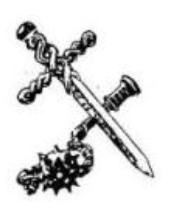

6.
- Ó, igen, már vártuk önt, Kerüljön beljebb -
mondja a szolga. Követed a fogadószobába. Az
asztal
három személyre van megterítve. Apothecus feláll,
hogy üdvözöljön és bemutatja a barátját,
Diodorust, a Tudóst, a lét síkjai közti utazások
szakértőjét. Elmondja neked, hogy létezik néhány
kapu vagy átjáró, amelyek lehetővé teszik az
utazást Orb és az egyéb világok között.
Véleménye szerint téged is egy hasonló kapun át
hoztak el a Földről. - „Amint visszaszerzed a
Talizmánt - folytatja -‚ el kell hagynod
Szürkecéheket. Menj délkeletnek míg csak el nem
éred a Nagy Fennsíkot. A Fennsík legmagasabb
hegye az Égigérő hegy. Annak a csúcsán találod
meg az egyik ilyen kaput, amelyen át
visszajuthatsz a Földre.”
- És most ejtsünk szót a sokkal sürgetőbb
kérdésekről - szól Apothecus. - A várost a temető
mögötti kiskapun hagyhatod el. Ha komoly bajba
kerülsz, fohászkodj Mindenek Anyjához
segítségért. Csak azt kell kiáltanod: „Mindenek
Anyja, természet, ments meg!” Elismételteti veled
a szavakat, melyeket jól az agyadba vésel.
Jegyezd fel a Kalandlapodra! Elmagyarázza, hogy
Mindenek Anyja az Élet Szökőkútja, a Halál
ellensége. Valószínűleg segíteni fog neked, de
csak egyetlenegyszer, amikor a legnagyobb
szükséged lesz rá. - De vigyázz! Egyetlen istenség
sem lépheti át a másik templomának küszöbét! -
Megköszönöd mindkettőjüknek és leültök
vacsorázni. Pompás ételeket tálalnak fel. Pávát
Rá-pálinka mártásban és egyéb
különlegességeket. Vacsora urán hamar aludni
térsz. Frissen ébredsz - nyersz 4 ÉLETERŐ
pontot! Istenhozzádot mondasz Apothecusnak,
megköszönve a segítséget és reménykedve, hogy
nem fogod cserben hagyni. Elindulsz, hogy
megkeresd a Tolvajok Klánját. Lapozz a 64-re.
